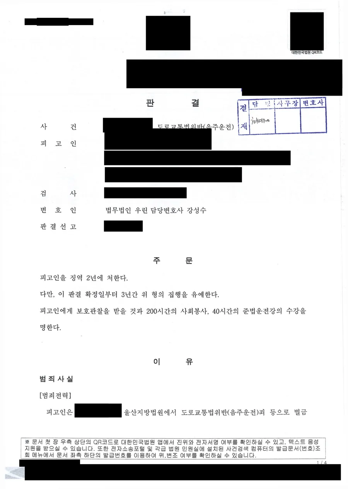

핵심 결과
음주운전 재범 사건에서 가장 많이 놓치는 것이 기간입니다.
이전에 벌금형을 받았더라도 그 형이 확정된 날부터 10년 안에 다시 걸리면 훨씬 무거운 조항이 적용됩니다.
이 사건이 그랬습니다.
의뢰인은 이미 두 차례 음주운전으로 처벌받은 전력이 있었고, 이번이 세 번째였습니다.
혈중알코올농도도 0.122%로 높았습니다.
법무법인 우린은 재범을 끊을 구조를 자료로 만들었고, 결과는 징역 2년에 집행유예 3년이었습니다.
| 구분 | 내용 |
|---|---|
| 사건 분야 | 도로교통법위반(음주운전) 재범 |
| 전력 | 음주운전으로 두 차례 처벌, 직전 사건은 벌금 1,000만 원 |
| 적용 조항 | 도로교통법 제148조의2 제1항 (10년 내 재범 가중) |
| 혈중알코올농도 | 0.122% |
| 운전 거리 | 약 3km |
| 최종 결과 | 징역 2년 / 집행유예 3년 / 보호관찰 / 사회봉사 200시간 / 준법운전강의 40시간 |
어떤 사건이었나
의뢰인은 이전에 음주운전으로 벌금 1,000만 원의 약식명령을 받았습니다.
그 약식명령이 확정된 지 얼마 지나지 않은 시점이었습니다.
의뢰인은 다시 술을 마시고 운전대를 잡았습니다.
혈중알코올농도 0.122%의 상태로 약 3km 구간을 운전하다 단속됐습니다.
이것이 세 번째 적발이었습니다.
실형 위험이 컸던 이유
- 벌금 이상의 형이 확정된 날부터 10년 안에 다시 위반해 재범 가중 조항이 적용됐습니다.
- 이미 두 차례 처벌받고도 반복했다는 점이 그대로 드러났습니다.
- 혈중알코올농도 0.122%는 면허취소 구간이면서 수치 자체가 높은 편입니다.
- 직전 처벌이 벌금 1,000만 원이었기 때문에 같은 벌금형으로 끝날 명분이 약했습니다.
법원이 재범 위험성을 높게 볼 수밖에 없는 구조였습니다.
벌금형을 받았는데도 왜 이번엔 징역형인가요
도로교통법 제148조의2 제1항이 적용되기 때문입니다.
이 조항은 제44조 제1항 또는 제2항을 위반해 벌금 이상의 형을 선고받고 그 형이 확정된 날부터 10년 내에 다시 위반한 사람을 무겁게 처벌합니다.
여기서 두 가지를 오해하기 쉽습니다.
첫째, 벌금형도 포함됩니다.
징역형이나 집행유예를 받았을 때만 재범으로 잡히는 것이 아닙니다.
둘째, 기준은 사건이 발생한 날이 아니라 앞선 형이 확정된 날입니다.
약식명령을 받고 정식재판을 청구하지 않아 그대로 확정되면, 그날부터 10년이 계산되기 시작합니다.
| 많이 하는 오해 | 실제 |
|---|---|
| 벌금형은 전과가 아니다 | 벌금 이상의 형이면 재범 가중 대상입니다 |
| 2회까지는 괜찮다 | 횟수가 아니라 10년이라는 기간이 기준입니다 |
| 수치가 낮으면 재범도 벌금이다 | 재범 가중 조항은 별도의 법정형을 두고 있습니다 |
재범 사건에서 결과를 가르는 것은 반성문의 양이 아니라, 다시 운전하지 못할 구조가 실제로 있느냐입니다.
해결 전략
1. 반복된 원인을 먼저 정리했습니다
세 번째 적발이라는 사실 앞에서는 죄송하다는 말이 힘을 잃습니다.
같은 일이 왜 반복됐는지를 설명하지 못하면, 네 번째도 있을 것이라는 판단으로 이어집니다.
의뢰인의 생활 패턴, 음주 습관, 운전이 필요한 상황을 함께 점검했습니다.
어떤 상황에서 판단이 무너졌는지를 구체적으로 특정했습니다.
2. 물리적으로 운전할 수 없는 상태를 만들었습니다
말로 하는 다짐과 실제 구조는 다릅니다.
차량 처분, 음주 관련 교육 수강, 생활 관리 계획, 가족의 감독 체계를 준비해 자료로 제출했습니다.
재판부가 가장 궁금해하는 것은 하나입니다.
이 사람이 다시 운전대를 잡을 수 있는 상황인가입니다.
이 질문에 자료로 답했습니다.
3. 실형이 아니어야 하는 이유를 사회 안에서 찾았습니다
재범 사건에서 선처를 구하는 것만으로는 부족합니다.
구금이 아니라 사회 안에서 관리하는 것이 재범 방지에 더 효과적인 이유를 제시해야 합니다.
보호관찰과 사회봉사, 수강명령을 통해 국가가 지속적으로 관리할 수 있다는 점을 정리했습니다.
실제 판결에서도 보호관찰과 200시간의 사회봉사, 40시간의 준법운전강의가 함께 부과됐습니다.
결과
법원은 불리한 정상을 분명히 했습니다.
두 차례 음주운전으로 형사처벌을 받은 전력이 있음에도 다시 음주운전에 나아갔다는 점, 이 사건 당시 혈중알코올농도 수치가 높다는 점을 지적했습니다.
동시에 범행을 인정하고 반성하는 태도를 보이고 있다는 점을 유리한 정상으로 참작했습니다.
최종 결과
징역 2년에 집행유예 3년이 선고되었습니다.
보호관찰과 사회봉사 200시간, 준법운전강의 40시간 수강이 함께 명해졌습니다.
의뢰인은 구속을 피하고 사회 안에서 관리를 받으며 생활을 이어갔습니다.
자주 묻는 질문
| 질문 | 답변 |
|---|---|
| 이전에 벌금형만 받았는데도 재범 가중이 되나요? | 됩니다. 벌금 이상의 형이 확정된 날부터 10년 내 재위반이면 도로교통법 제148조의2 제1항이 적용됩니다. |
| 10년은 언제부터 계산하나요? | 앞선 사건의 발생일이 아니라 그 형이 확정된 날부터 계산합니다. |
| 3회째면 무조건 실형인가요? | 위험이 크지만 재범 방지 구조와 양형자료에 따라 집행유예가 가능합니다. |
| 어떤 자료가 실제로 도움이 되나요? | 차량 처분, 음주 관련 치료·교육 이력, 가족 감독 계획처럼 다시 운전할 수 없게 만드는 자료입니다. |
| 보호관찰과 사회봉사는 왜 붙나요? | 사회 안에서 관리하는 것이 재범 방지에 적절하다고 판단될 때 집행유예에 함께 부과됩니다. |
| 면허는 어떻게 되나요? | 형사처벌과 별개로 취소 처분이 진행되며 재범인 경우 결격기간이 더 깁니다. |
결론
음주운전 재범 사건에서 전과 횟수는 이미 정해져 있습니다.
바꿀 수 있는 것은 앞으로의 구조뿐입니다.
인터넷에서 받은 반성문 양식이나 탄원서 숫자로는 이 부분을 채울 수 없습니다.
차를 어떻게 처리했는지, 술을 어떻게 관리할 것인지, 누가 감독할 수 있는지를 자료로 보여줘야 합니다.
전과가 많다고 포기할 일은 아니지만, 초기부터 제대로 준비해야 합니다.
본 사례는 의뢰인 보호를 위해 일부 내용을 각색했으며, 처분 결과와 형량은 실제와 같습니다.
사무장·상담실장 없이 변호사가 직접 상담합니다
음주운전 재범 사건은 첫 조사 단계에서 방향이 정해집니다.
구속영장이 청구되는 경우도 적지 않습니다.
법무법인 우린은 강성수 변호사가 직접 상담하고, 재범 방지 자료 설계부터 양형자료 준비, 법정 변론까지 직접 맡습니다.
전과가 있는 상태에서 다시 적발됐다면, 지금 사건이 어느 단계에 있는지부터 확인해야 합니다.
이 글은 일반적인 법률 정보 제공을 위한 자료이며, 개별 사건의 결과를 보장하지 않습니다. 구체적인 대응은 사실관계와 증거에 따라 달라질 수 있습니다.